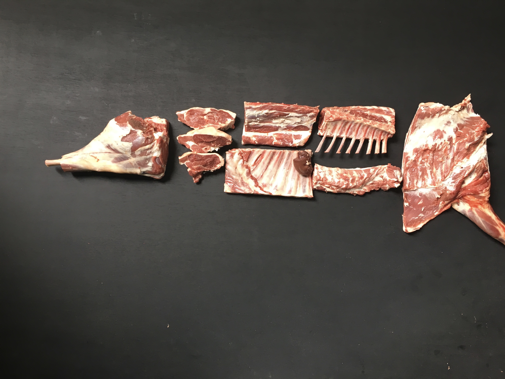

Arch 13, Spa Terminus, Dockley Rd, SE16 3SF Saturdays 9am-2pm Orders and Enquiries 02072370182 orders@thebutcheryltd.com
49 London Rd SE23 3TY
Lewisham College Carpark Lewisham Way SE4 1UT Saturdays 10am-2pm Orders and Enquiries 02072370182 orders@thebutcheryltd.com
We source all our meat from small, British farmers. And it’s always native-breed, free range, pasture fed meat, which we dry age ourselves in Bermondsey. We buy our meat directly from small farms or in conjunction with Traditional Breeds Meat Market. Dealing directly wiht farmers ensures a fair price for them and guarantees qulait and provenance. So we’re not only being environmentally and economically sustainable, we know exactly where our meat comes from and how it’s reared. We’re always happy to tell you – so just ask.
We buy and butcher the whole carcass. We only buy whole animal carcasses and butcher them the traditional way – from tongue to tail. By doing things this way, we can check the meat as a whole, see what cuts are best suited to the animal and butcher it accordingly. And, of course, this practice means we use the animal in the most efficient way possible, which helps the farmers, too.
We buy and butcher the whole carcass. We only buy whole animal carcasses and butcher them the traditional way – from tongue to tail. By doing things this way, we can check the meat as a whole, see what cuts are best suited to the animal and butcher it accordingly. And, of course, this practice means we use the animal in the most efficient way possible, which helps the farmers, too.